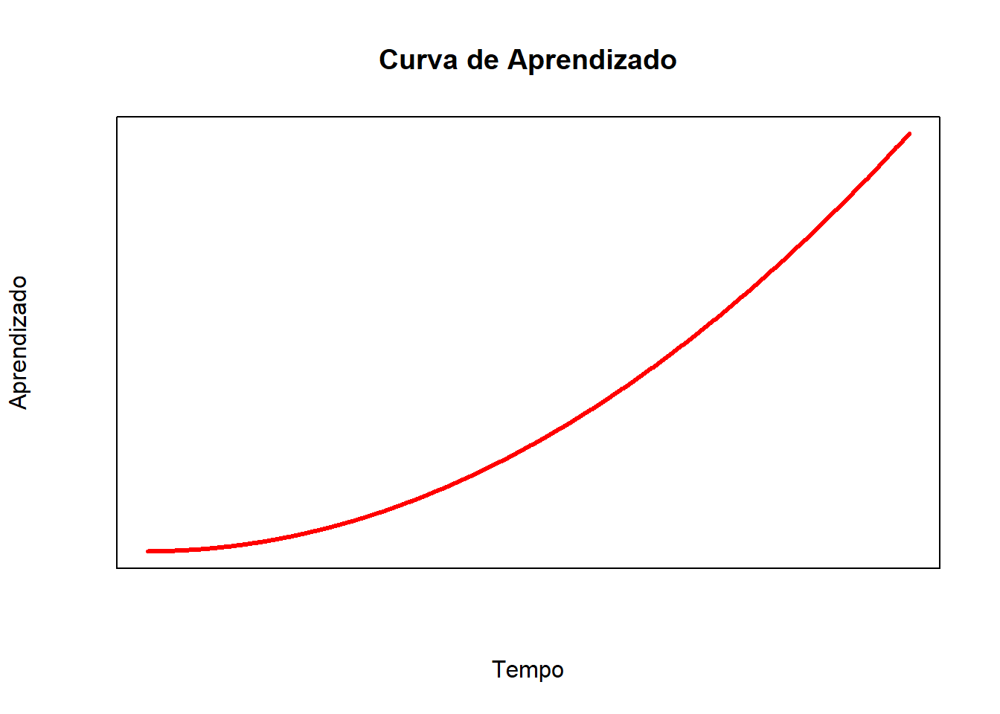
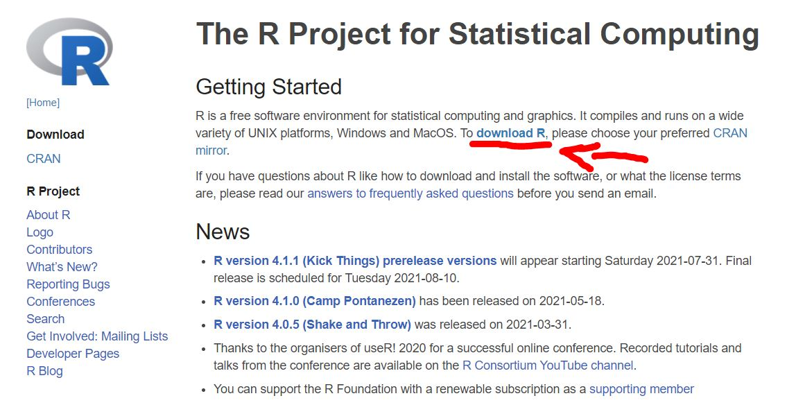
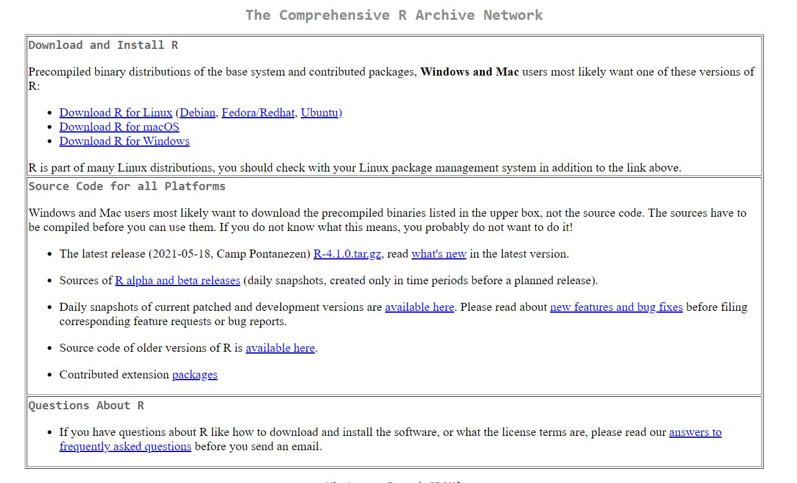
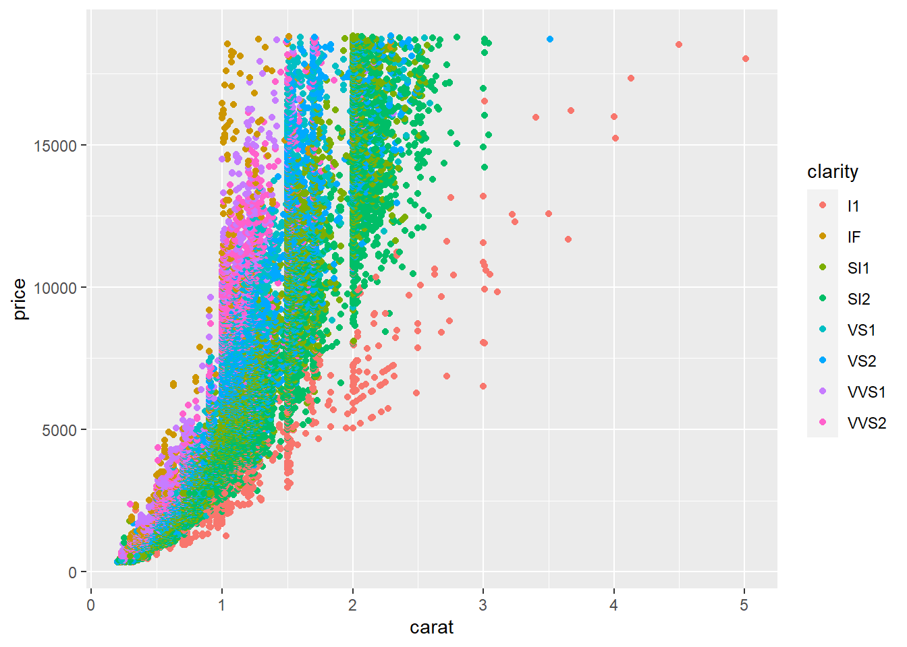
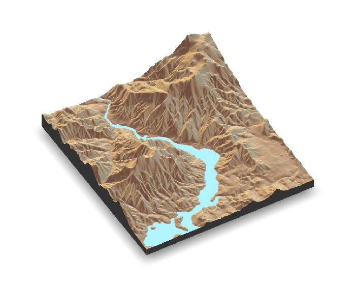

Capítulo 2 Vamos ao que interesa - Conhecendo o R
2.0.1 O que é o R?
É uma linguagem de programação voltada para resolução de problemas estatísticos, tratamento e visualização de dados.
Para Peng (2020) essa resposta é simples, “R é um dialeto do S.”
De acordo com Perlin (2018) O código base do R foi inicialmente criado no laboratório da Bell/ AT& T por John Chambers e seus colegas, com base na linguagem S. Esse código foi reaproveitado por dois acadêmicos, Ross Ihaka e Robert Gentleman, resultando na plataforma de programação que temos hoje. Para os curiosos, o nome R foi escolhido devido ao compartilhamento da primeira letra do nome de seus criadores.

O R está em constante desenvolvimento por um grupo chamado R Team Core e conta com colaboração gratuita de centenas de milhares de usuários e desenvolvedores ao redor do mundo. Por isso, atualmente o R é utilizado por diversas áreas do conhecimento variando das ciências humanas até exatas, naquelas ciências que poderíamos imaginar pouco ou nada relacionadas. Por isso não se limite a procurar informações apenas no sei nicho, abra sua mente e busque aprender de outras ciências também. Eu, particularmente, busco muita coisa na econometria. embora presente em todo tipo de livro sobre R, asta citação acima (Perlin (2018)) é de um livro de econometria. Veremos mais conteúdos desse material em breve.
R é um software livre de análise de dados (não só estatística) que funciona em diversos sistemas operacionais: GNU Linux, MicrosoftWindows, Mac OS X e outros.
O aprendizado do R é difícil no início devido à necessidade de se adaptar à sua lógica de funcionamento, se acostumar com a estrutura dos seus documentos de ajuda e memorizar alguns comandos básicos.
eq = function(x){x*x}
plot(eq(1:1000), type="l",lwd=3,col="red", xaxt="n", yaxt="n", xlab="Tempo", ylab="Aprendizado", main="Curva de Aprendizado")
É preciso bastante perseverança e motivação para aprender os comandos básicos, e disposição para ler as páginas de ajuda e os manuais. Entretanto, depois de um certo tempo, ele possibilita que se trabalhe com grande produtividade e, o que é mais importante, eficácia e independência.
Leia também sobre o mito da curva de aprendizado do R.
2.0.2 Instalação do R
O R é um software gratuito para análises estatísticas e além. Pode ser baixado de The R Project for Statistical Computing.
Clique em download R.

Escolha o “espelho”.Escolha o mais próximo de você.

Escolha o seu sistema operacional. Caso você seja usuário de windows clique em Download R for Windows em seguinda em install R for the first time e finalmente em Download R 4.1.0 for Windows. Veja que no momento que este tutorial foi feito a versdão mais recente é a 4.1.0. No vídeo abaixo a versão é uma anterior, mas a lógica é a mesma.

clique aqui para assistir o vídeo de instalação do R e RStudio no windows
Eu não tenho um sistema operacional de cada para mostrar a instalação, por isso deixo este vídeo para instalação no linux e este para instalação no mac. Caso você não consiga instalar me procure.
2.0.3 Primeiro contato
Temos 1 arquivo .csv com mais de 50.000 linhas referentes a transações de venda de diamantes dividida em 3 colunas clarity, carat e price. Quanto mais claro mais caro, certo? Ou há sub ou super valorização? Vamos investigar se essa relação é verdadeira.
mydata<-read.csv("J:/ENG 792/ENG_792-AVDR/ENG.792-AVDR/Cap_1_P2-Mispriced-Diamonds.csv")
library("ggplot2")
ggplot(data=mydata, aes(x=carat, y=price))+
geom_point() Faz algum sentido. Mas temos pontos que não são estatisticamente significantes à direita, então vamos fazer uma limpeza, vamos mexer na transparência.
Faz algum sentido. Mas temos pontos que não são estatisticamente significantes à direita, então vamos fazer uma limpeza, vamos mexer na transparência.
ggplot(data=mydata, aes(x=carat, y=price, colour=clarity))+
geom_point()
Vamos nos livrar dos pontos não significativos, aqueles que são carat menores que 2.5.
ggplot(data=mydata,
aes(x=carat, y=price, colour=clarity))+
geom_point(alpha=0.1) 
brown é a melhor claridade, vejam que temos mispricing onde as linhas se cruzam.
ggplot(data=mydata[mydata$carat<2.5,],
aes(x=carat, y=price, colour=clarity))+
geom_point(alpha=0.1) +
geom_smooth()## `geom_smooth()` using method = 'gam' and formula 'y ~ s(x, bs = "cs")'
Executando o código abaixo você produzirá uma Modelo Digital do Terreno em 3D em uma janela pop up do pacote rayshader.
library(rayrender)
library(rayshader)
library(magick)
#Here, I load a map with the raster package.
loadzip = tempfile()
download.file("https://tylermw.com/data/dem_01.tif.zip", loadzip)
localtif = raster::raster(unzip(loadzip, "dem_01.tif"))
unlink(loadzip)
#And convert it to a matrix:
elmat = raster_to_matrix(localtif)
#We use another one of rayshader's built-in textures:
elmat %>%
sphere_shade(texture = "desert") %>%
add_water(detect_water(elmat), color = "desert") %>%
plot_3d(elmat, zscale = 10, fov = 0, theta = 60, zoom = 0.75, phi = 45, windowsize = c(1000, 800))
Agora vamos adicionar mais algumas infromações como escala e Norte.
render_scalebar(limits=c(0, 5, 10),label_unit = "km",position = "W", y=50,scale_length = c(0.33,1))
render_compass(position = "E")
Sys.sleep(0.2)
render_highquality(samples=200, scale_text_size = 24,clear=TRUE)